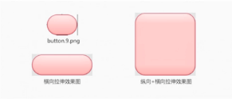
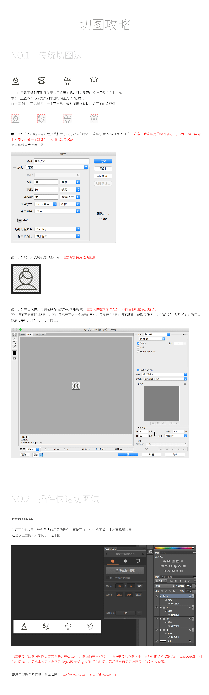

Table of Contents generated with DocToc
切图的基本规范
切图是指开发在实现过程中，需要计算好每一个元素（包括文字、图片等）的位置，然后再调用我们切好的图进行填充。
哪些内容需要切图
- ICON
- 不规则图形
切图要求
一般切图保存为：PNG24
切图尺寸
- 320屏幕输出1X
- 640屏幕输出2X
- 960屏幕输出3X
快速切图方法 CUTTERMAN
Cutterman是一个Photoshop扩展功能切图插件。
切图命名规范
- 用英文命名，不用拼音
- 每一部分用下划线分隔
- 两倍图在名字最后要加@2X
- 三倍图在名字最后要加@3X
LOFTER登陆页面命名规范
网易考拉海购页面
网易考拉海购——主菜单
w网易考拉海购——icon
网易考拉海购——主页面
网易考拉海购——列表页
安卓.9.png
.9.png切图只有在安卓的设计中才会用到，iOS中是不需要用到的，它主要用于适应不同分辨率的屏幕，使空间可以任意拉伸。

拉伸之外的效果图：

修改画图大小，用黑色铅笔画黑点，保存为.9.png后缀即可。
- 最外围的一圈像素必须是纯黑色或者透明，一点点的半透明的像素都不可以有，比如99%的黑色或者1%的投影都不可以有。
- 文件的后缀名必须是
.9.png，不能是.png或者是9.png.png，这样的命名都会导致编译失败。
切图的注意事项
正切精确的命名
- 开发在实现页面的时候，需要一张张找图，所以精准的命名能够让开发一目了然。
归纳切片类别
我们完成的页面会有几十个，每个页面会有零零散散地图标，这时候把他们一个个拿出来根据不同用途归纳到一起可以方便开发同学查找。比如我们可以新建一个toolbar的文件夹存放所有跟工具栏相关的icon。
分包存储
即使我们按照上面把切片分类别了，但零零碎碎地切图，不可能完全分类。于是剩下的一些，我们就需要按照一个页面一个文件包的方式来整理切图，这样不管是开发要拿，或者你要更新，都在这个统一的地方交接就行了。
注意点击的区域
切图攻略
